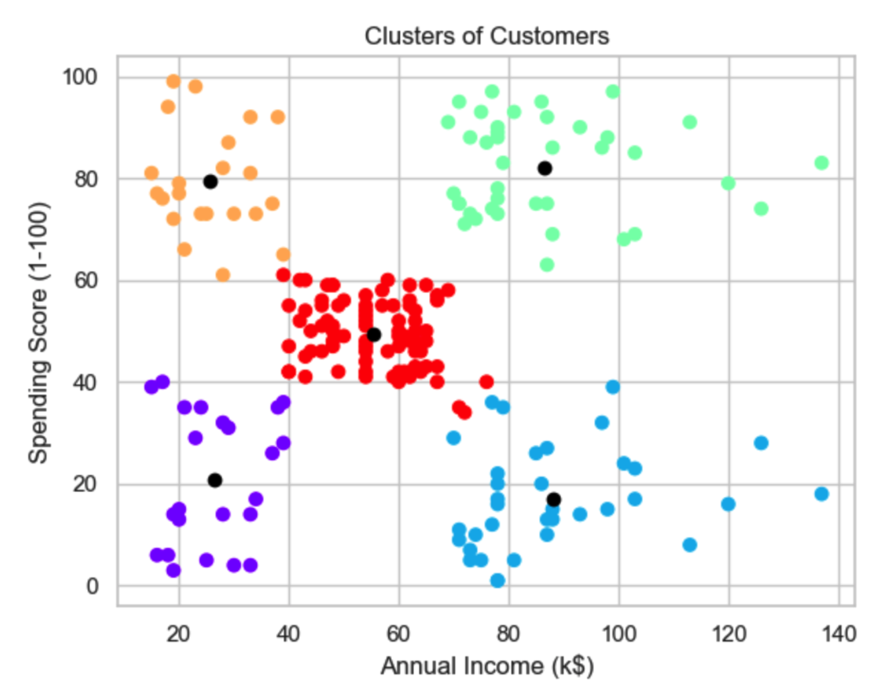
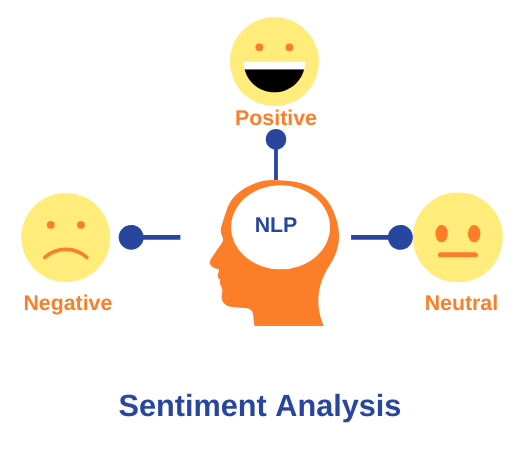

I developed an end-to-end resume ATS tracking system using LLM Google Mini Pro, and deployed it on Streamlit. This innovative project automates resume screening, ensuring efficient and accurate candidate matching. It streamlines the recruitment process, enhancing productivity and reducing time-to-hire for organizations.

Understanding customer behavior is essential for businesses aiming to enhance their marketing strategies and overall customer satisfaction. One effective method to achieve this is through customer segmentation. In my recent project on customer segmentation where I used K-means clustering to segment customers based on their demographic and spending behavior.
In my stock market forecasting project, I extracted historical stock data using the yfinance library. By implementing LSTM models, I analyzed and predicted stock price trends, achieving high accuracy. The project showcases advanced data extraction and Deep learning techniques, providing valuable insights into market movements and investment strategies.

Made a Sales/Profit Dashboard in Tableau for visualizing and analyzing sales data, allowing businesses to gain insights into their profitability, performance, and trends. This dashboard shows total sales, sales trend, profit and profit margin. Also added filters, parameters, and interactive elements to allow users to drill down into specific data points ranging from different subcategories of products grouped by cities, counties and states.

I implemented Sentiment analysis on Amazon food reviews using Hugging Face's RoBERTa and VADER which involves comparing the performance of these two models. RoBERTa, a transformer-based model, excels at capturing contextual nuances, while VADER, a rule-based tool, offers quick, interpretable results. Evaluating both highlights the balance between advanced deep learning and straightforward lexicon approaches.
I developed a Tableau dashboard for college rankings, incorporating filters like SAT/ACT scores, public or private institution status, tuition fees comparison, median income after graduation, student race demographics, and male vs. female population. This interactive tool assists parents and students in making informed decisions about college selection based on various critical criteria.
I'm currently working on END to END data engineering projects using AWS EC2 instance.